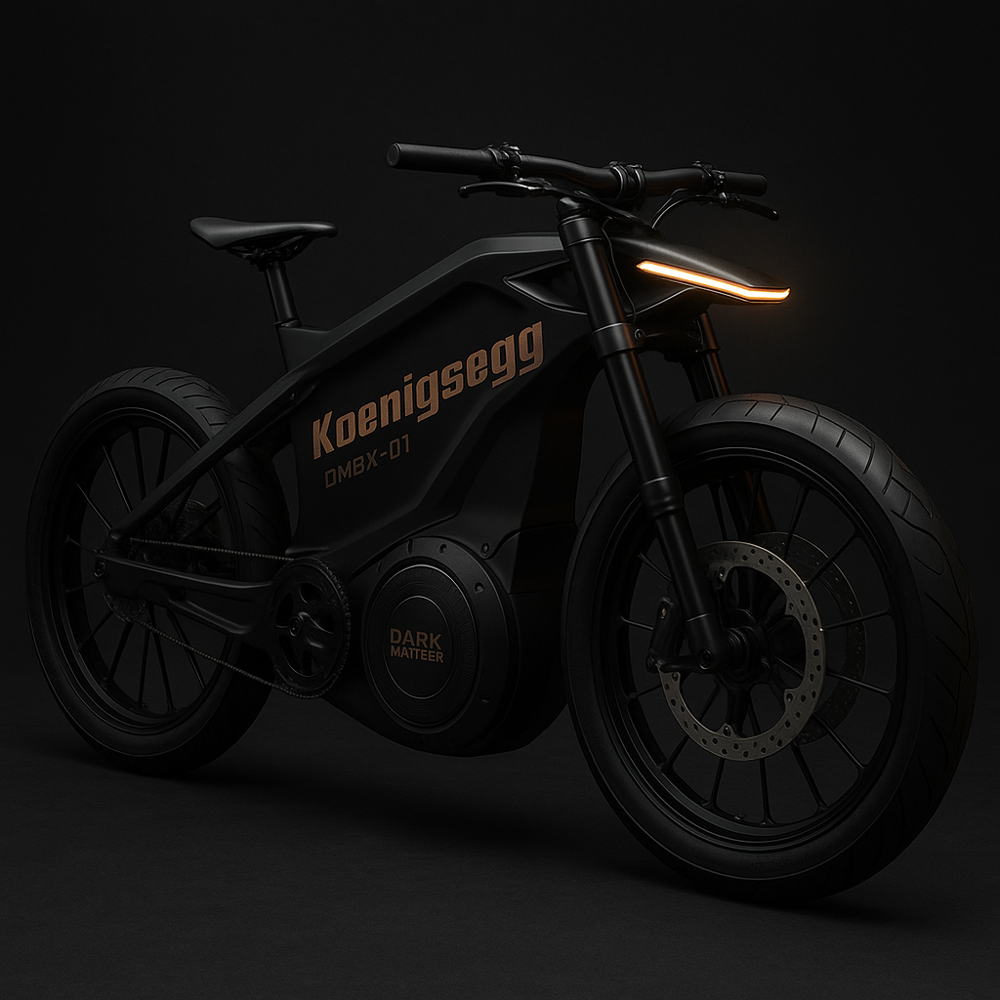

Berserker
La Berserker es una e-bike de élite diseñada para dominar la pista. Construida completamente en fibra de carbono, ofrece ligereza y resistencia excepcionales. Con un motor de 590kW y una velocidad máxima de 900 km/h, esta máquina es perfecta para quienes buscan rendimiento extremo en competencias de alto nivel.